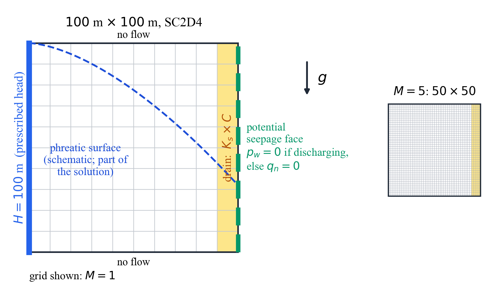
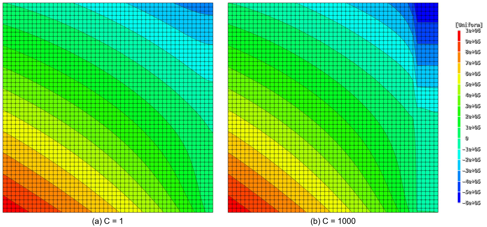
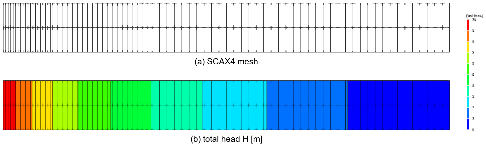
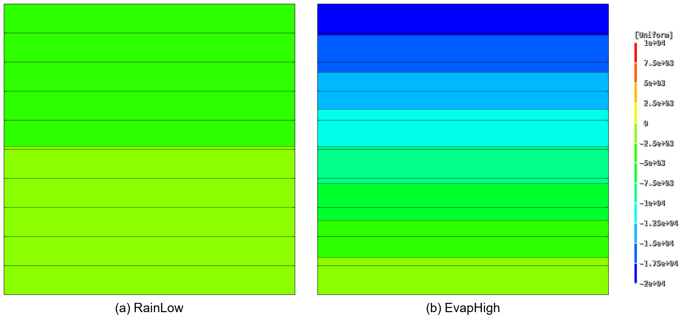
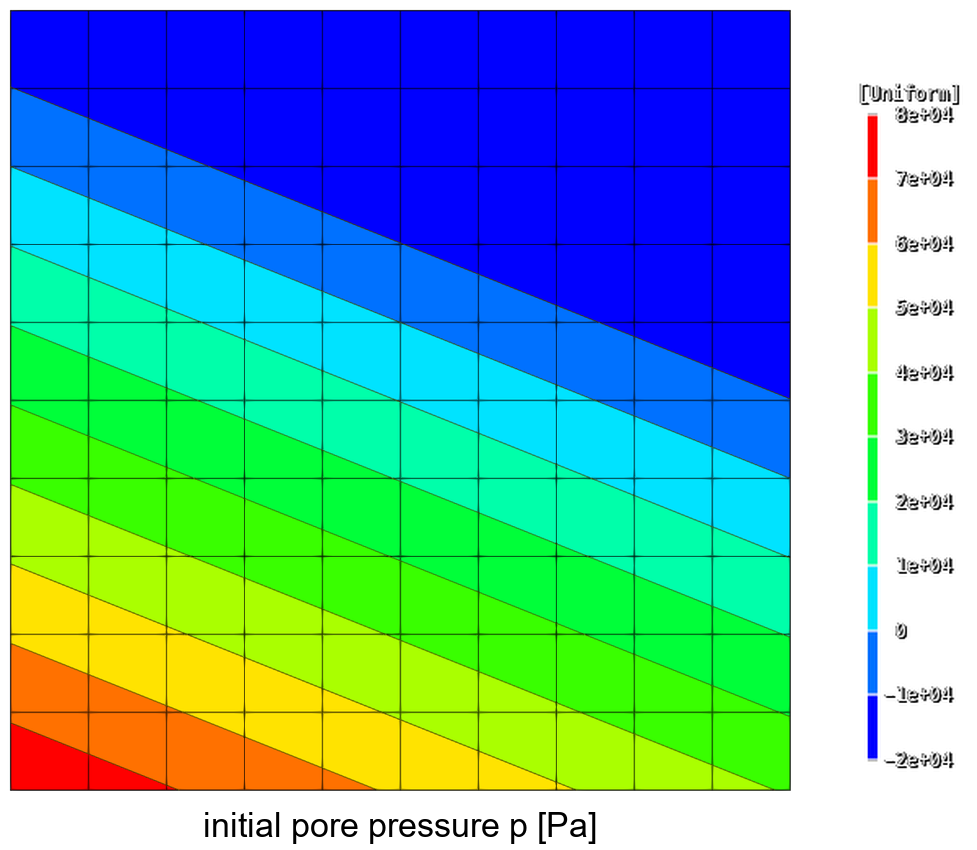

V.17 Seepage Element and Boundary Conditions
V.17.1 Steady Seepage
A \(100\ \mathrm{m}\times100\ \mathrm{m}\) square domain is divided into a \(90\ \mathrm{m}\) wide main soil and a \(10\ \mathrm{m}\) wide drain region and meshed with \(50\times50\) SC2D4 elements. A total head \(H=100\ \mathrm{m}\) is prescribed on the left boundary, and the right boundary is a potential seepage face (PSF). The remaining boundaries are no-flow. The saturated permeability of the drain is \(C\) times that of the main soil, and the two cases \(C=1\) and \(C=1000\) are analyzed.

Figure V.17.1 Analysis Model of the Steady and Transient Seepage ExamplesTable V.17.1 Material Properties
| Property | Value |
|---|---|
| Main-soil saturated permeability \(K_s\) | \(1.0\times10^{-6}\ \mathrm{m/s}\) |
| Drain saturated permeability | \(C\,K_s\) |
| Water unit weight \(\gamma_w\) | \(9810\ \mathrm{N/m^3}\) |
| Specific storage \(S_s\) | \(1.0\times10^{-5}\ \mathrm{m^{-1}}\) |
| Residual and saturated water contents \((\theta_r,\theta_s)\) | \((0.05,\ 0.40)\) |
| van Genuchten parameters \((\alpha,n)\) | \((2\ \mathrm{m^{-1}},\ 1.8)\) |
| Relative air-entry regularization | \(\alpha s_E=0.05\) |
The steady step uses Picard iteration with scheduled relaxation along the material continuation path (Path=Material). Both cases reach the steady state with balanced inflow and outflow. In the table, the pinned PSF nodes are the exit nodes held at zero pressure and the free nodes are those in the no-flow state.
Table V.17.2 Steady Seepage Results
| \(C\) | PSF pinned / free nodes | Inflow \((\mathrm{m^3/s})\) | Relative flow imbalance |
|---|---|---|---|
| 1 | 20 / 31 | \(5.01305\times10^{-5}\) | \(8.11\times10^{-7}\) |
| 1000 | 1 / 50 | \(5.57315\times10^{-5}\) | \(8.26\times10^{-5}\) |

Figure V.17.2 Pore Pressure p [Pa] of the Steady SeepageEach input defines both a total-head load (Displacement, H) and a constant water-level load (SeepageWaterLevel, \(H_w=100\ \mathrm{m}\)) on the left boundary and activates one of them in each of two independent steady steps. The left-boundary nodes lie at \(0\le z\le100\ \mathrm{m}\), so all of them are submerged and the two steps impose the same \(H=100\ \mathrm{m}\) boundary. The nodal pressures and total heads of the two steps coincide, which confirms that the two loads are the same boundary condition in the steady state.
Input File
simple-steady-m5-c1.inp: \(C=1\)simple-steady-m5-c1000.inp: \(C=1000\)
V.17.2 Transient Seepage and Water-Level Drawdown
The same mesh and materials as in V.17.1 are used. The steady solution with a left-boundary head of \(100\ \mathrm{m}\) is the initial state. The left head is then lowered to \(98\ \mathrm{m}\) and the response is integrated for 30 days while the right-boundary PSF condition is retained.
The time unit in *Environment is seconds and the transient step uses TUnit=day. The automatic time increment starts at \(1/24\) day and is limited to between \(1/1440\) day and 1 day, with the storage-tangent stabilization left at LScheme=Auto. Frames are written at \(1/24\), \(1/4\), 1, 3, 7, 15, and 30 days. Both cases complete the 30-day analysis. These two examples have no independent reference solution and serve as runnable examples.
Figure V.17.3 Pore Pressure p [Pa] after 30 Days of Drawdown
The remaining two inputs check how the SeepageWaterLevel boundary handles a level that passes through boundary nodes. The first input lowers the left reservoir level linearly from \(100\ \mathrm{m}\) to \(96\ \mathrm{m}\) over one day. The level passes the boundary node at elevation \(98\ \mathrm{m}\) at 0.5 day; nodes below the level receive the hydrostatic head, and nodes exposed above the level switch automatically to the PSF condition. The second input lowers the same reservoir to \(96\ \mathrm{m}\) during the first half day and raises it back to \(100\ \mathrm{m}\) during the second half day. The exposed node at elevation \(98\ \mathrm{m}\) returns to the submerged head boundary, and the final state is \(p=19.62\ \mathrm{kPa}\) and \(H=100\ \mathrm{m}\).
Input File
simple-transient-m5-c1.inp: \(C=1\), 30-day transient analysissimple-transient-m5-c1000.inp: \(C=1000\), 30-day transient analysissimple-water-level-drawdown.inp: one-day drawdownsimple-water-level-drawdown-rewet.inp: drawdown followed by rewetting
V.17.3 Axisymmetric Elements
SCAX3 and SCAX4 use global X as the radius \(r\) and global Y as the elevation \(z\). Element volume and surface flux are integrated with \(2\pi r\,dA\) and \(2\pi r\,ds\), respectively, and the SolidSection thickness is not used. Three problems compare geometry on the axis, steady radial flow with surface flux, and transient storage against analytical solutions.
Cylinder including the axis. A saturated cylinder with radius and height \(1\ \mathrm{m}\) is divided into four SCAX3 elements, and total heads of 0 and \(1\ \mathrm{m}\) are prescribed at the bottom and top. The permeability is \(k=1.0\times10^{-4}\ \mathrm{m/s}\). The exact solution is \(H=z\), and the total flow is
Steady radial flow through an annulus. A saturated annulus with inner radius \(r_i=1\ \mathrm{m}\), outer radius \(r_o=10\ \mathrm{m}\), and height \(b=1\ \mathrm{m}\) has total heads of \(10\ \mathrm{m}\) inside and 0 outside. It is analyzed with an SCAX3 mesh and an SCAX4 mesh, and the analytical solution is
The SCAX4 input applies SeepageFlux \(q=1.0\times10^{-5}\ \mathrm{m/s}\) to the outer surface in a following step and checks that the sum of the equivalent nodal fluxes equals \(2\pi r_o b\,q\).

Figure V.17.4 SCAX4 Mesh and Total Head of the Annular Radial FlowTransient cylinder. The top head of a saturated cylinder including the axis is raised instantaneously to \(1\ \mathrm{m}\) while the bottom head is kept at zero. With \(c=k/S_s=0.01\ \mathrm{m^2/s}\), the analytical head at elevation \(z\) is the Fourier series
The SCAX4 mesh is analyzed to \(50\ \mathrm{s}\) with \(\Delta t=0.05\ \mathrm{s}\), and the head at the axis node \(z=0.5\ \mathrm{m}\) is compared every 5 seconds.
Table V.17.3 Axisymmetric Element Results
| Problem | Element | Quantity | Error |
|---|---|---|---|
| Cylinder including the axis | SCAX3 | Total-flow relative error | \(2.34\times10^{-6}\) |
| Annular radial flow | SCAX3 | Total-flow relative error | \(2.26\times10^{-4}\) |
| Annular radial flow | SCAX4 | Total-flow relative error | \(8.99\times10^{-5}\) |
| Annular radial flow | SCAX4 | Absolute head error at \(r=2,4,7\ \mathrm{m}\) | \(<2.0\times10^{-4}\ \mathrm{m}\) |
| Outer-surface flux | SCAX4 | Relative error of the nodal-flux sum | \(7.47\times10^{-7}\) |
| Transient cylinder | SCAX4 | Maximum absolute head error at \(z=0.5\ \mathrm{m}\) | \(5.73\times10^{-4}\ \mathrm{m}\) |
Input File
axisymmetric-axis-flow-scax3.inp: cylinder including the axisaxisymmetric-radial-flow-scax3.inp: annular radial flow, SCAX3axisymmetric-radial-flow-scax4.inp: annular radial flow and outer-surface flux, SCAX4axisymmetric-transient-column-scax4.inp: transient cylinder
V.17.4 Pressure-Limited Seepage Flux
PMax and PMin of the SeepageFlux load switch the boundary to pressure control when the requested flux cannot be applied, as with rainfall ponding or an evaporation pressure limit, and return it to flux control when the condition is released. A \(1\ \mathrm{m}\) high saturated column with permeability \(k=1.0\times10^{-6}\ \mathrm{m/s}\) has its bottom total head fixed at zero and a uniform SeepageFlux on its top surface. Five steps change the requested flux and the pressure limit in turn.
Table V.17.4 Pressure-Limited Flux Boundary
| Step | Requested \(q\) [m/s] | Pressure limit [Pa] | Top pressure [Pa] | FN per top node |
Boundary state |
|---|---|---|---|---|---|
| RainLow | \(5.0\times10^{-7}\) | None | \(-4905\) | 0 | Flux |
| RainHigh | \(2.0\times10^{-6}\) | \(p_{\max}=0\) | 0 | \(-5.0\times10^{-7}\) | Pressure |
| RainLowAgain | \(5.0\times10^{-7}\) | \(p_{\max}=0\) | \(-4905\) | 0 | Flux restored |
| EvapHigh | \(-2.0\times10^{-6}\) | \(p_{\min}=-19620\) | \(-19620\) | \(+5.0\times10^{-7}\) | Pressure |
| EvapLow | \(-5.0\times10^{-7}\) | \(p_{\min}=-19620\) | \(-14715\) | 0 | Flux restored |
Each of the two top nodes receives half of the requested surface flux in FE, and FN cancels the excess while pressure control is active. Hence FE + FN is the nodal flux that actually passes the boundary. The repeated low-rain and low-evaporation steps confirm the return to flux control in both directions.

Figure V.17.5 Pore Pressure p [Pa] of the Column under RainLow and EvapHighThe second input starts a dry unsaturated soil with a large automatic time increment. The first increment is cut back several times before it converges, and the analysis completes to \(1000\ \mathrm{s}\). The example checks that the discarded attempts do not leave a trace in the pressure-limit state.
Input File
reviewed-seepage-flux.inp: pressure limits and return to flux control in five stepsreviewed-seepage-flux-cutback.inp: pressure-limit state after automatic time-increment cutbacks
V.17.5 Initial Conditions
*InitialCondition assigns the initial values of nodal degrees of freedom at the start of a step. Transient seepage takes its initial pressure field from a water table (WaterTable), a total head (Head), or a pore pressure (Pressure), and direct time-integration dynamics takes nodal velocities (Velocity). The nodal-velocity initial condition is verified in V.6.5.
Horizontal water table. A closed unsaturated column \(10\ \mathrm{m}\) high receives a horizontal water table at elevation \(6\ \mathrm{m}\). The hydrostatic field \(p=\gamma_w(z_w-z)\) is the equilibrium of a no-flow domain, so every transient frame must equal the initial field.
Sloped water table. A \(10\times10\ \mathrm{m}\) domain receives the sloped water table \(z_w(x)=8-0.4x\) with the pressure floor PMin=-20000 Pa. In the initial frame, nodes below the table must equal \(\gamma_w(z_w-z)\) and nodes above it \(\max[\gamma_w(z_w-z),\,-20000]\); the following increments redistribute the non-equilibrium field.

Figure V.17.6 Initial Pore Pressure p [Pa] from the Sloped Water TableHead and pressure assignment and reset. The same column is analyzed in four step chains. Head \(H=6\ \mathrm{m}\) and node-wise Pressure \(p=\gamma_w(6-z)\) must give the same solution, and the top node overridden with Pressure on top of a WaterTable must take \(-10{,}000\ \mathrm{Pa}\). The chain that inherits the end state of a steady step through Prev= and resets it with WaterTable must show the water-table hydrostatic pressure and a zero pressure rate in its initial frame.
Table V.17.5 Initial Condition Results
| Example | Check | Result |
|---|---|---|
| Horizontal water table | Pressures at elevations 0, 4, 6, 8, \(10\ \mathrm{m}\) and total head \(H=6\ \mathrm{m}\) retained | Within \(10^{-6}\ \mathrm{Pa}\) |
| Sloped water table | Nodal pressures in the initial frame | Match the hydrostatic field and the floor |
| Head and pressure assignment and reset | Initial and following frames of the four chains | Match the assigned values, zero pressure rate |
Input File
initial-water-table-horizontal.inp: horizontal water tableinitial-water-table-sloped.inp: sloped water table with a pressure floorinitial-head-pressure-reset.inp: head and pressure assignment, override, and reset on top ofPrev=
V.17.6 State Fields, Water Balance, and Surface Flow Rate
The seepage state fields (VWC, SAT, KR), the water-balance history (WB.*), and the surface-flow sensors are checked against analytical solutions and conservation identities. The models and checks of the six inputs are as follows.
Table V.17.6 State Field and Water Balance Checks
| Input | Model | Check | Reference |
|---|---|---|---|
seepage-state-water-balance-2d.inp |
Two saturated SC2D4 elements | Steady flow through an internal section, transient water balance \(Q_{IN}-Q_{OUT}-Q_{STO}=Q_{ERR}\) after a head drop, accumulated volumes, VQ |
\(Q=kA\,\Delta H/L=5.0\times10^{-5}\ \mathrm{m^3/s}\) |
seepage-state-fields-unsaturated.inp |
VGM and User materials | VWC, SAT, KR at all integration points, field restoration in a branched Prev= chain, step-start fields of a newly activated element, *Output target selection |
Material definitions |
seepage-surface-flow-axisymmetric.inp |
Cylinder of radius \(1\ \mathrm{m}\) and height \(1\ \mathrm{m}\) | Flow through the top surface | \(Q=\pi\times10^{-4}\ \mathrm{m^3/s}\) |
seepage-surface-flow-3d.inp |
Unit cube of SC3D8 | Flow through a face, SAT and KR of a SaturationOnly material |
\(Q=1.0\times10^{-4}\ \mathrm{m^3/s}\), SAT and KR equal to 1 |
seepage-surface-flow-material-path.inp |
Steady Path=Material continuation |
Section flow at every intermediate point | Analytical solution of each material state |
seepage-water-balance-duplicate-psf.inp |
The same PSF target specified twice | Double counting of WB.QDEF |
Identical to a single specification |
Input File
seepage-state-water-balance-2d.inpseepage-state-fields-unsaturated.inpseepage-surface-flow-axisymmetric.inpseepage-surface-flow-3d.inpseepage-surface-flow-material-path.inpseepage-water-balance-duplicate-psf.inp